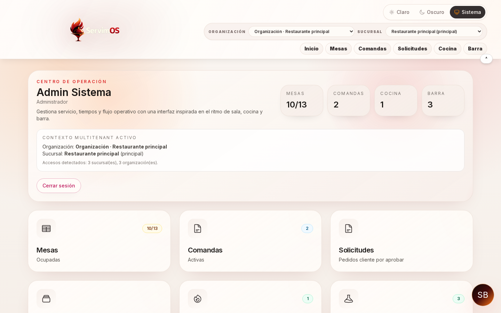
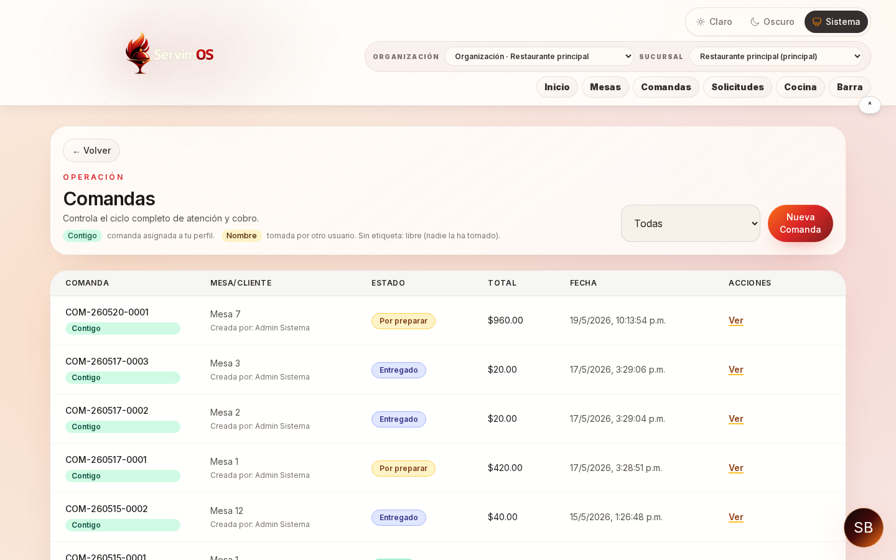
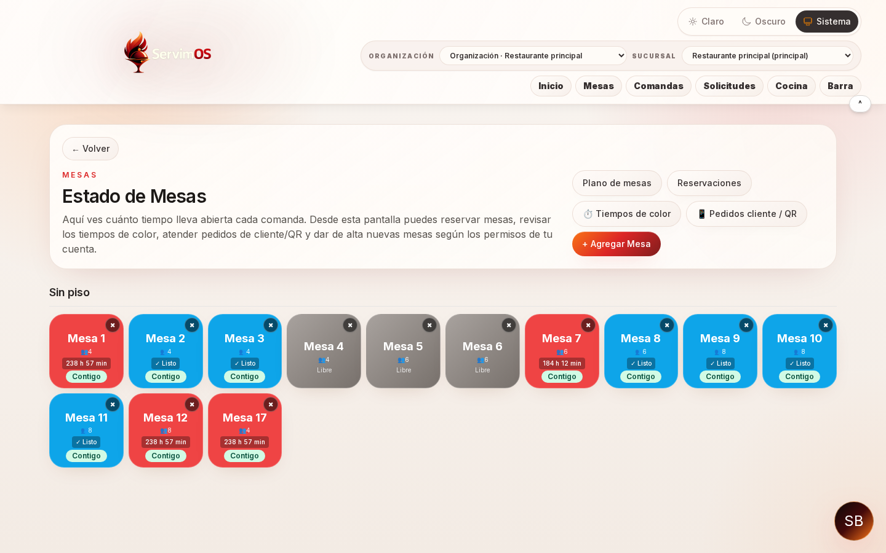
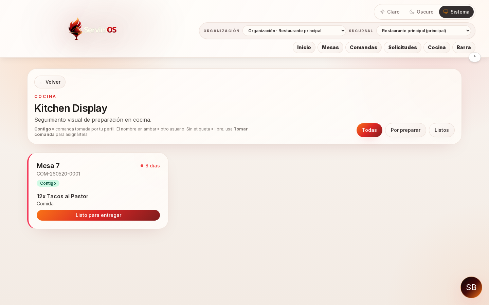
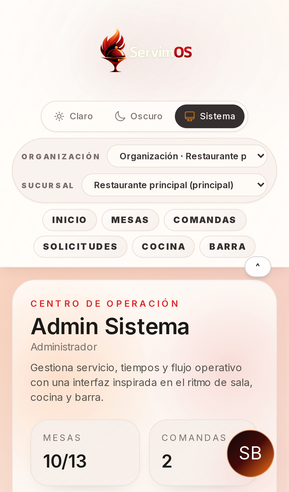
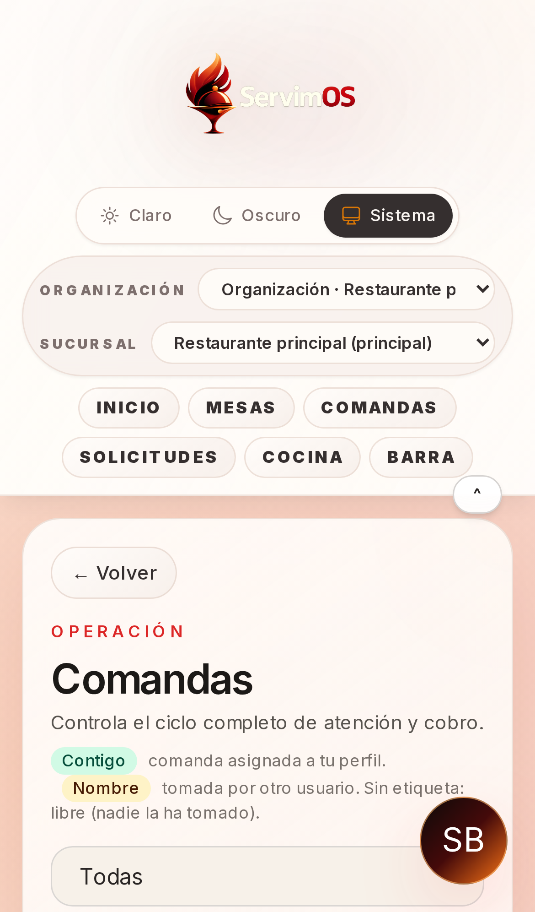

Tu operación en un solo lugar
Pedidos de mesa, QR y links unificados para no perder contexto.
Empieza completamente gratis
Solo necesitas tu teléfono. Regístrate gratis y opera el primer día con comandas, QR y cocina en un solo flujo. Cuando crezcas, escalas la membresía — nada más.
Pedidos de mesa, QR y links unificados para no perder contexto.
Comanda a cocina/barra con estados claros para servicio más fluido.
Resumen de ventas, comandas y mesas para decidir sin adivinar.
Vista real del sistema
Estas pantallas muestran cómo se visualiza la operación en el día a día: pedidos activos, seguimiento y control en tiempo real.






Recorrido completo
Tu siguiente paso
Membresía
Regístrate sin pagar y opera desde tu teléfono (también sirve tablet o PC): mesas, QR, comandas, cocina y reportes. La capacitación no tiene costo extra.
Si después necesitas más funciones, más usuarios o más sucursales, cambias a un plan de membresía mensual. Tú decides cuándo dar ese paso.
Siguiente paso
Por WhatsApp resolvemos en minutos si ServimOS encaja en tu restaurante. Si prefieres ver el sistema en vivo, agenda una demo.